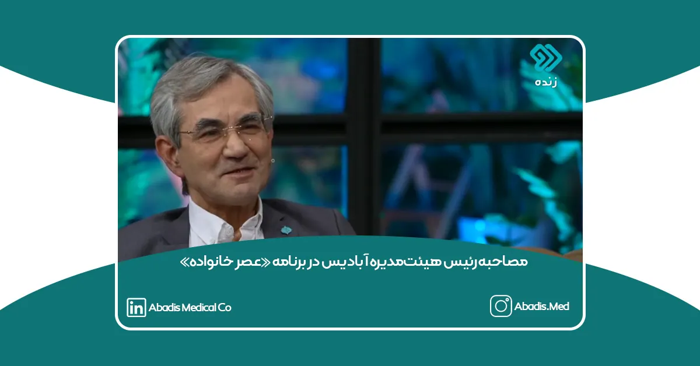

رئیس هیئتمدیره شرکت دانشبنیان مخازن طبی آبادیس، جناب آقای ابوالفضل حسنعلی، روز چهارشنبه ۱۲ شهریورماه ۱۴۰۴ با حضور در برنامه تلویزیونی «عصر خانواده» از شبکه دو سیمای جمهوری اسلامی ایران، به تشریح بخشی از فعالیتها و مسئولیتهای اجتماعی این مجموعه پرداخت.
در این گفتوگوی تلویزیونی، آقای حسنعلی با تأکید بر نقش بنگاههای اقتصادی در بهبود شرایط اجتماعی، به اقدامات انساندوستانهای اشاره کرد که طی سالهای گذشته با مشارکت شرکت مخازن طبی آبادیس انجام شده است؛ اقداماتی که شامل حمایت از افراد ناتوان، یاریرسانی به بیماران نیازمند، ساماندهی کودکان بیسرپرست و کمک به آزادی افراد گرفتار در بند بوده است.
وی در بخشی از این مصاحبه با اشاره به انگیزه اصلی این فعالیتها اظهار داشت:
«در عوض همه این کارهایی که انجام دادم، عشق گرفتم.»
این جمله، بازتابدهنده نگاه انسانی و ارزشمحور مدیریت آبادیس به مفهوم مسئولیت اجتماعی و تعهد اخلاقی در کنار فعالیتهای صنعتی و اقتصادی است.
رئیس هیئتمدیره آبادیس همچنین خاطرنشان کرد که توسعه پایدار، تنها در رشد تولید و فناوری خلاصه نمیشود، بلکه توجه به کرامت انسانی، کاهش رنجهای اجتماعی و مشارکت فعال در بهبود کیفیت زندگی جامعه، از ارکان اصلی مسیر رشد واقعی هر سازمان محسوب میشود.
شرکت مخازن طبی آبادیس بهعنوان یکی از مجموعههای دانشبنیان فعال در صنعت تجهیزات پزشکی کشور، همواره تلاش کرده است تا در کنار نوآوری، تولید و اشتغالزایی، نقش مؤثری در ایفای مسئولیتهای اجتماعی و حمایت از اقشار آسیبپذیر جامعه ایفا کند؛ رویکردی که در این گفتوگوی رسانهای نیز مورد تأکید قرار گرفت.
برای مشاهده ویدئوی کامل این مصاحبه، روی این لینک کلیک نمایید.